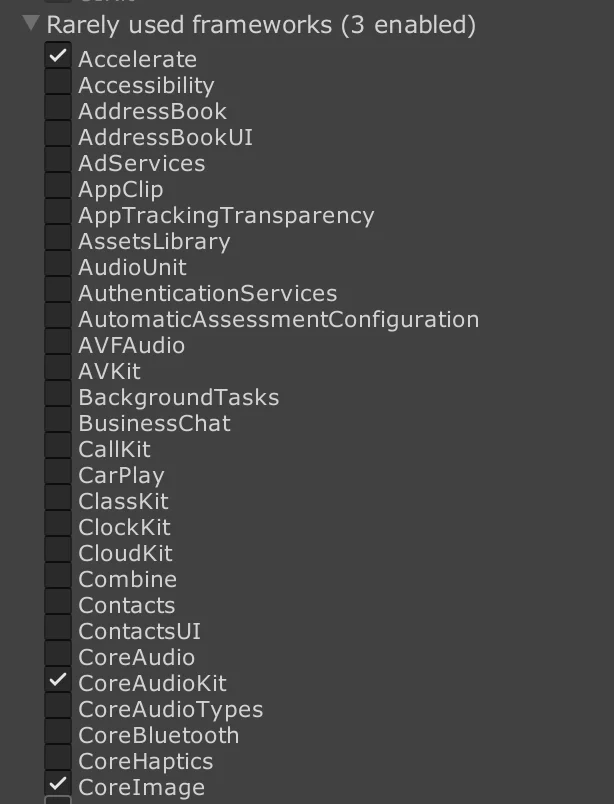
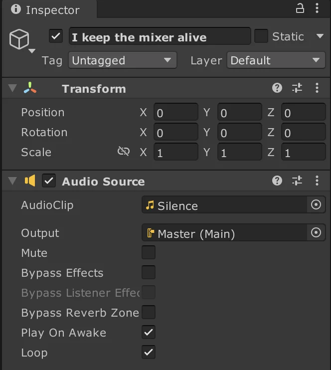

Introduction
Integrating JUCE audio plugins with Unity on the iOS platform presents unique challenges. Officially, mobile builds are not directly supported by JUCE for Unity native audio plugins. However, with JUCE's existing support for iOS plugin development, enabling Unity plugins for iOS platforms is a feasible task.
This article will guide you through the necessary modifications in the JUCE framework to achieve this and explain how to incorporate these plugins into your Unity project.
Note that this walkthrough only covers CMake-based JUCE projects. If you're using the Projucer, this guide will not be applicable. However, the concepts presented here may still be useful for understanding how to modify the Projucer exporter to support iOS Unity plugins.
Modifying the JUCE Framework for iOS Unity Plugins
One of the main differences in building iOS plugins for Unity is that they must be static libraries (.a files) instead of dynamic libraries (.dylib files). The JUCE CMake API does not currently support this, so we must make some modifications to the framework to enable this functionality. Below is a step-by-step walkthrough:
Modify JUCEModuleSupport.cmake: Locate the file
extras/Build/CMake/JUCEModuleSupport.cmakein the JUCE framework. Under the function_juce_get_platform_plugin_kinds, add the following lines:if(CMAKE_SYSTEM_NAME STREQUAL "iOS") list(APPEND result Unity) endif()This adds the
Unityplugin format to the list of available plugin formats for iOS platforms.Adjust JUCEUtils.cmake: In
extras/Build/CMake/JUCEUtils.cmake, update the function_juce_link_plugin_wrapper. Add these lines to enable the static library creation for iOS Unity plugins at the first if statement in the function:elseif((CMAKE_SYSTEM_NAME STREQUAL "iOS") AND (kind STREQUAL "Unity")) add_library(${target_name} STATIC) add_custom_command(TARGET ${target_name} POST_BUILD COMMAND libtool -static -o "${CMAKE_CURRENT_BINARY_DIR}/${target}_artefacts/$<CONFIG>/Unity/${target_name}.a" $<TARGET_FILE:${shared_code_target}> $<TARGET_FILE:${target_name}> COMMENT "Combining static libraries into ${target_name}.a" )This creates a combined static library from the shared code target and the plugin target. The resulting
.afile will be placed in<cmake_build_dir>/<target_name>_artefacts/<config>/Unity/.Also, we don't want a bundle to be created, so we should update this condition a bit further down in the function:
if(NOT kind STREQUAL "LV2") _juce_configure_bundle(${shared_code_target} ${target_name})to this:
if(NOT kind STREQUAL "LV2" AND NOT (CMAKE_SYSTEM_NAME STREQUAL "iOS" AND kind STREQUAL "Unity")) _juce_configure_bundle(${shared_code_target} ${target_name})
My fork of the JUCE framework, which includes these changes, is available here. You can check the differences between the original JUCE framework repository and my fork to see the exact changes made.
Integrating the Plugin into Unity
After building your JUCE plugin with these modifications, the output will be a combined static library file (.a). Follow these steps to integrate it into your Unity project:
Place the Static Library: Copy the
.afile into theAssets/Plugins/iOSfolder in your Unity project.Set Framework Dependencies: In the Unity editor, specify these framework dependencies under the plugin settings:
Accelerate,CoreAudioKit,CoreImage.
A minimal JUCE synth plugin will depend on these 3 frameworks. If your plugin uses additional frameworks, you will need to add them here as well.
Add iOS-Specific Code: Include the following Objective-C code snippet saved as
Assets/Plugins/iOS/MyPluginAppcontroller.mmto register the audio plugin (credit goes to tonetech on the JUCE forum for this tip):
#include "UnityAppController.h"
@interface MyPluginAppController : UnityAppController {}
@end
extern "C" {
// Manually register the Unity Audio Effect plugin.
struct UnityAudioEffectDefinition;
typedef int (\*UnityPluginGetAudioEffectDefinitionsFunc)(
struct UnityAudioEffectDefinition**_ descptr);
extern void UnityRegisterAudioPlugin(
UnityPluginGetAudioEffectDefinitionsFunc getAudioEffectDefinitions);
extern int UnityGetAudioEffectDefinitions(UnityAudioEffectDefinition_** definitionptr);
}
@implementation MyPluginAppController
- (void)preStartUnity {
[super preStartUnity];
UnityRegisterAudioPlugin(&UnityGetAudioEffectDefinitions); // Initialize native audio plugins
}
@end
IMPL_APP_CONTROLLER_SUBCLASS( MyPluginAppController )
This ensures that the Unity audio system recognizes and initializes your native audio plugin correctly.
- Keep the Audio Session Active: In the Unity iOS build, the audio mixer (and consequently your plugin) is deactivated when there is no audio source playing.
If you're planning to use a synth plugin, you will want to keep the audio mixer active at all times. To do this, you can simply keep looping a silent audio clip routed to the mixer. This will keep the audio mixer active, and your synth plugin will continue to run.

- Build the Xcode Project: Set the target platform to iOS in the Unity Editor. Create the Xcode project in the Build menu in Unity. Remember to update your code signing settings. The Xcode project doesn't need any other modifications afterward.
Conclusion
With these adjustments, JUCE can be extended to support Unity plugin development for iOS platforms, allowing you to leverage its powerful audio capabilities within mobile Unity projects. For further references, please visit the sample Unity project, JUCE project, and the modified JUCE fork repository available at the links below:
- JUCE Fork: https://github.com/playfultones/JUCE
- Demo Synth Plugin: https://github.com/playfultones/DemoSynthPlugin
- Demo Unity Project: https://github.com/playfultones/DemoUnityApp